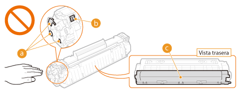

0KXF-005
|
|
|
No se deshaga de los cartuchos de tóner utilizados en llamas al descubierto. Asimismo, no guarde los cartuchos de tóner ni el papel en lugares que estén expuestos a llamas, ya que tanto el tóner como el papel podrían prenderse y provocar quemaduras o incendios.
Si se derrama o se esparce el tóner, límpielo con mucho cuidado con un paño húmedo y procure no aspirar polvo de tóner. Para limpiar el tóner derramado, no utilice aspiradoras que no cuenten con medidas de seguridad para evitar explosiones de polvo. De lo contrario, podrían producirse daños en la aspiradora o una explosión de polvo debido a una descarga estática.
Si utiliza un marcapasos cardíaco
Los cartuchos de tóner generan un flujo magnético de bajo nivel. Si utiliza un marcapasos cardíaco y siente algo anómalo, aléjese de los cartuchos de tóner y acuda inmediatamente a un médico.
|
 |
|
Procure no aspirar tóner. Si esto sucede, póngase en contacto con su médico inmediatamente.
Procure que el tóner no entre en contacto con los ojos ni con la boca. Si esto sucede, retírelo inmediatamente lavándose con agua fría y póngase en contacto con un médico.
Procure que el tóner no entre en contacto con la piel. Si esto sucede, lávese con agua fría y jabón. Si se le irrita la piel, póngase en contacto con un médico inmediatamente.
Mantenga los cartuchos de tóner y el resto de consumibles fuera del alcance de los niños. Si alguien ingiere tóner, póngase en contacto de inmediato con un médico o con un centro de toxicología.
No desmonte ni modifique el cartucho de tóner. De lo contrario, el tóner podría esparcirse.
Quite la cinta selladora del cartucho de tóner por completo sin aplicar demasiada fuerza. De lo contrario, el tóner podría esparcirse.
|
 |
|
Manipulación del cartucho de tóner
Sujete el cartucho de tóner por el mango.
 No toque los contactos eléctricos (
 ) ni la memoria del cartucho de tóner ( ) ni la memoria del cartucho de tóner ( ). No abra el obturador protector del tambor ( ). No abra el obturador protector del tambor ( ). De lo contrario, existe el riesgo de que se arañe la superficie del tambor o de exponerlo a la luz. ). De lo contrario, existe el riesgo de que se arañe la superficie del tambor o de exponerlo a la luz.  El cartucho de tóner es un producto magnético. Manténgalo alejado de productos que puedan resultar dañados por magnetismo como, por ejemplo, disquetes, discos duros u otros dispositivos. De lo contrario, podrían perderse datos.
Almacenamiento de cartuchos de tóner
Para garantizar un funcionamiento seguro y satisfactorio, guarde los cartuchos de tóner en las siguientes condiciones ambientales.
Intervalo de temperatura de almacenamiento: de 32 a 95 °F (de 0 a 35 °C) Intervalo de humedad de almacenamiento: 35-85 % HR (humedad relativa), sin condensación* Guarde el cartucho de tóner sin abrir hasta que vaya a utilizarlo.
Cuando extraiga el cartucho de tóner del equipo para guardarlo, coloque el cartucho de tóner extraído en su bolsa protectora original o envuélvalo en un paño grueso.
Cuando guarde el cartucho de tóner, no lo haga en posición vertical ni al revés. El tóner se solidificará y no podrá volver a su estado original aunque sea agitado.
* Incluso dentro del intervalo de humedad de almacenamiento, si existen diferencias de temperatura dentro y fuera del cartucho de tóner, podrían formarse gotas de agua (condensación) dentro del mismo. La condensación dentro del cartucho será perjudicial para la calidad de impresión.
No guarde el cartucho de tóner en los siguientes lugares
Lugares expuestos a llamas
Lugares expuestos a la luz solar directa o a luz brillante durante cinco minutos o más
Lugares expuestos a aire demasiado salado
Lugares en los que haya gases corrosivos (por ejemplo, aerosoles y amoniaco)
Lugares sujetos a altas temperaturas y altos niveles de humedad
Lugares sujetos a cambios drásticos de temperatura o humedad en los que pueda producirse condensación
Lugares con una gran cantidad de polvo
Lugares que estén al alcance de niños
Tenga cuidado con los cartuchos de tóner falsificados
Le informamos de que existen cartuchos de tóner Canon falsificados en el mercado. El uso de cartuchos de tóner falsificados puede producir una mala calidad de impresión o un funcionamiento deficiente de la máquina. Canon no se hace responsable de posibles defectos de funcionamiento, accidentes o daños ocasionados por el uso de cartuchos de tóner falsificados.
Para obtener más información, consulte http://www.canon.com/counterfeit.
Disponibilidad de repuestos y de cartuchos de tóner
Los repuestos y los cartuchos de tóner de este equipo se encontrarán disponibles durante un mínimo de siete (7) años tras la interrupción de la producción de este modelo.
Material de embalaje de los cartuchos de tóner
Guarde la bolsa protectora del cartucho de tóner. La necesitará para transportar el equipo.
La forma y la colocación del material de embalaje pueden sufrir cambios, o podría añadirse o eliminarse material sin previo aviso.
Deseche la cinta selladora que ha quitado respetando la normativa local al respecto.
Eliminación de los cartuchos de tóner usados
Coloque el cartucho de tóner en su bolsa protectora para evitar que el tóner se derrame y, a continuación, deshágase de él según lo estipulo por la normativa local al respecto.
|